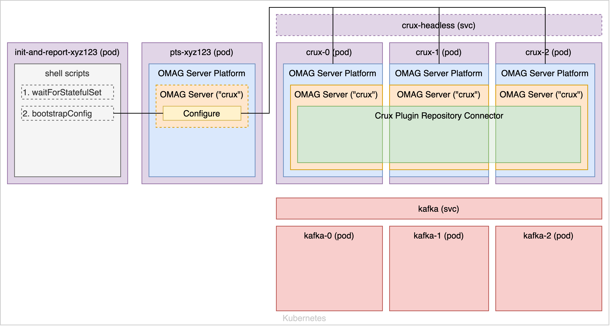

Crux
Repository Connector for Egeria
High Availability
Orientation
TL;DR?
Just use the right arrow on your keyboard: each slide is one step, with minimal explanation.
Need more?
If at any point you want more of an explanation, use the down arrow on your keyboard to drill-down.
Keyboard shortcuts
Aha, you want more!
This getting started guide is written using a great web-based presentation framework
called reveal.js. You can use its icons
on the slides to move around, or you can use keyboard shortcuts. Try the ? key
to bring up a cheatsheet of the keyboard shortcuts.
At any point, you can also press the m key to bring up the menu. From the menu you
can quickly jump to any particular topic.
Looking for more about how the connector actually works, rather than this primer on keyboard shortcuts? Be sure you've read through the Getting Started guide.
The sample
To walk through how high availability works for the connector, we will walk through how the
sample Helm chart provided under cts/charts/ec-ha-crux works.
This chart starts up a number of different elements, and configures them in a specific sequence. Continue downwards for a step-by-step explanation of the startup process.
Startup

When it is first deployed, then Helm chart starts a number of pods and services: for Crux, Kafka, execution of the Performance Test Suite and a pod used for configuration.
Startup

Each Crux pod runs its own separate OMAG Server Platform, in its own JVM, and a script in the
init-and-report pod will wait until all three pods' OMAG Server Platforms are
running before proceeding to any of the following steps. (The headless service
allows each pod to be directly addressed, without load-balancing, to do such a check.)
Configure

The next script creates a singular configuration document via the pts pod, and
deploys this common configuration to each of the pods (again using the headless
service to directly address each one individually): each will have a separate crux
server configured with the same Crux Plugin Repository Connector (same metadata collection ID).
Configure

When the /instance is called against each pod, each will create a local index
and instance of the ICruxAPI interface: all pointing to the same golden stores
(in the example, Kafka) where all persistence for Crux is handled. All servers will refer
to the singular crux load-balancing service as their root URL.
Run

Now when we start the Performance Test Suite, all traffic to the technology under test is
routed via this crux load-balancing service: which will round-robin each request
it receives to the underlying pods running the Crux plugin repository connector. Kafka has
a similar service, which handles load-balancing across its own pods for all write operations.
Outages

Should there be any outage (in the example above, both a Crux pod and a Kafka pod going down) the Kubernetes services will simply stop routing traffic to those pods and the overall service will continue uninterrupted.
Limitations
There are a number of limitations to be aware of with the high availability configuration:
- Write operations will only be consistent when using a non-embedded Crux back-end: e.g. Kafka, S3, or JDBC.
- Since the indexes are local to each pod, read operations will be eventually consistent: the specific pod to which a query is routed may not yet have updated its embedded index with the results of the very latest write operations from some other pod.
- Currently configuration of Egeria requires making a number of REST API calls, which limits how dynamic we can be in adding or removing pods to an already-running cluster (in particular: we cannot rely on a readiness probe to indicate pod readiness to process actual work, but only its readiness to be configured). We hope to address this soon by allowing configuration and startup to be done without relying on REST calls, at which point we should be able to also support dynamically adding and removing pods from the cluster.